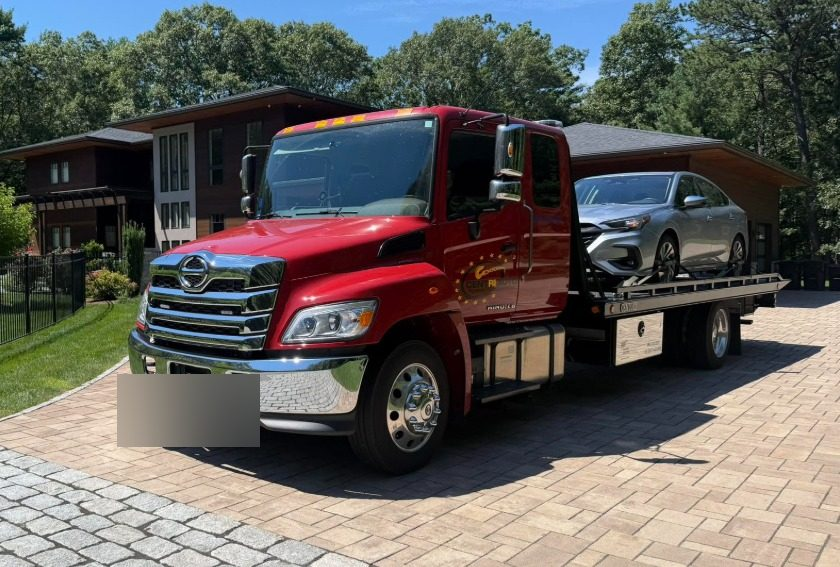

24/7 Towing & Roadside Assistance Across Rhode Island

Locally Owned, AAA-Trusted
Centri Auto Towing & Mechanical is built on 15 years in the automotive industry — including ownership of a full collision and mechanic shop — and 12+ years as an AAA-affiliated towing partner right here in Rhode Island. When you call, a dispatcher answers and a truck responds.
12+ years as a trusted AAA roadside partner in Rhode Island.
Towing & Roadside Assistance
Pricing depends on distance and vehicle — call and we'll give you a straight quote before we dispatch.
Towing
Flatbed & wrecker towing for light and medium-duty vehicles, handled safely from pickup to drop-off.
Call For a QuoteRoadside Assistance
- Full battery service on the road
- Full tire change on the road*
- Lockout service
- Fuel delivery
*We provide the labor to change your tire — we do not sell or supply replacement tires. You'll need your own spare or a tire on hand.
Call For a QuoteOur Fleet & Recent Work
Our trucks and recent tows across Rhode Island. License plates are blurred for customer privacy.
Proudly Serving South County & Beyond
Based in West Warwick, RI and dispatching across these Rhode Island towns.
What Drivers Are Saying
Real feedback from drivers we've helped across Rhode Island.
“Matt from the towing company was fantastic! He showed up when he said he would, he got the car loaded safely and swiftly and in turn dropped it off in the same manner. He was a great tow driver.”
— Meghan“The driver arrived within 15 minutes. He was polite, helpful & courteous.”
— Terrie“Irving was fantastic, nice, very polite and quick! He was great.”
— Wendy“The driver came in a timely fashion and demonstrated a friendly, competent approach to helping us.”
— Dean“Christian was very knowledgeable and efficient. He came promptly and took care of business! We were extremely satisfied — his guidance for driving home on the donut wheel as we had a long way to go (from Rhode Island to New York) was invaluable!”
— Sherri“Hai L. arrived at the scene. He was professional and helpful in spite of the downpour. He quickly got my vehicle going again.”
— Jeffrey“Dante was great! Arrived super quickly and changed my tire even quicker!”
— Ava“Matthew Sim was very helpful and courteous. It was late at night for him, but he still ensured that he provided the best assistance — and he did!”
— Brenda“Driver Don quickly arrived, diagnosed the battery issue and installed a new battery. Couldn't have done that quicker if I took it to a garage myself.”
— Charles“Alex was very professional and took care of my car perfectly.”
— Jennifer“Everyone was very polite and helpful from the beginning of the phone call until the end. When the service man opened my door, very professional. Very nice, can't say enough good things.”
— Maryann“Battery specialist at my driveway within an hour of my request for service. Problem diagnosed and battery replaced in 40 minutes. Could not ask for better service.”
— William